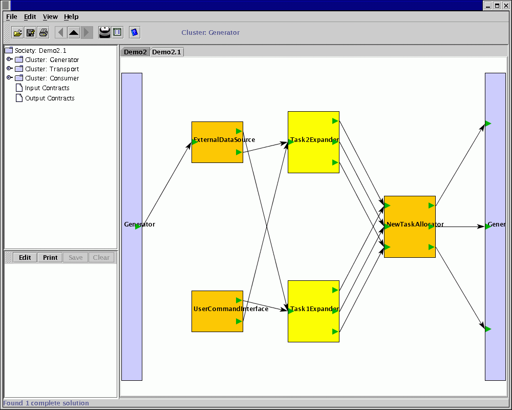

Sam
A Graphical Cougaar Society Maintenance Tool
Version 2.0
January 16, 2001
This software to be used only in accordance with the Cougaar software License agreement (http://www.cougaar.org).
Document and Software Copyright 2000-2001 Mobile Intelligence Corporation.
Abstract
The Sam toolset has been developed to assist Cougaar users in creating, visualizing, maintaining, and assessing the correctness of Cougaar societies. Sam displays both the explicit structure of societies and the implicit structure formed from producer/consumer relationships between plugins and clusters. Using the publish and subscribe contracts, Sam calculates the producer/consumer dependency graph and shows these publish/subscribe dependencies as directed links. This makes many simple configuration errors obvious and speeds understanding of plugin coupling.
Using the dependency graph, Sam is also able to analyze the society and report cases where there is no publication matching a subscription, more than one subscription matching a publication, or no subscription matching a publication. These simple checks catch many of errors caused by missing or mutually exclusive plugins being instantiated in a cluster.
Sam is able to go a step further and also help with building the configurations. A suggest capability allows the user to ask for suggested sets of plugins to fill gaps in a configuration. Sam examines the available plugins and suggests which set of plugins would match the dangling publications and subscriptions in the cluster. Expanding the accuracy and utility of this design assistance is the focus of the current Sam effort and we expect to include extended capabilities in version 3.0 of the toolset.
1.Introduction to the Sam’s User Interface
Sam provides a single view for basic functions, configuration management
The User Interface consists of a window that contains several panes and panels for performing these functions.
The User Interface contains the following elements:
Fig 1: Sam’s User Interface
1.2 Main Tool Bar: The main tool bar is composed of the following buttons.
2.0 Working with the User Interface
2.1.1 Load society
Fig2: shows the options in the file menu of the main menu
Once the Application is up and running, the Sam user interface can be used to load a society from the xml files. Once the "load society" command is clicked a file open dialog box pops up providing the user to choose from the list of the xml file. Once the choice is made the Main Panel will show the graphical representation of the society, for the xml that has been selected. From here the user can step into or out of the society. Stepping into the society at this point will display the graphical representation of the clusters and the communities that are available with in that society.
Fig 3: The file open dialog box for loading the ".xml" files
The different clusters and the communities displayed in this particular society are:
Fig 4: The Society.xml file with the clusters and the communities that are available
Stepping into the clusters will display the organized graphical representation of the plugins belonging to that particular cluster. Stepping into the communities will in turn display the clusters and the communities that are available in that community. In the example shown here the community consists of two clusters.
Fig 5: The clusters present in the community of the society.xml
2.1.2 Saving the society
The save society command in the file menu of the main menu will save the society as an xml file, at the same time the contracts for that particular society are also saved as "contracts.xml" file. This will pop up a save dialog box, letting the user to enter the xml name as which the society can be saved as.
Fig 6: The Save dialog box for the ". Xml" files
2.1.3 Close the Society
Closing the tab using the close society command in the file menu of the main menu can close the unwanted society.
2.1.4 Close all Societies
One can also close all the tabs/Societies.
If at the end there are no Societies left and the user wishes to close the last tab, then the default society is automatically loaded so that the main panel is not left blank.
2.1.5 Import From ini
Fig 7: The file open dialog box for the ".soc" files
The Sam user interface can also load a society from the ini files. Once the "Import from ini" command is clicked a file open dialog box pops up providing the user to choose from the list of the ". Soc" files.
Once the choice is made the Main Panel will show the graphical representation of the society, for the soc file that has been selected. The communities are not yet represented in the ini files. In the present society that is loaded the clusters that are present are:
Fig 8: The Cluster Generator.
Fig 9: The Cluster Consumer
Fig 10 : The Cluster Transport
2.1.6 Export to ini
The Sam user interface can also save a society to the ". Soc" file. Once the "Export to ini" command is clicked a file open dialog box pops up providing the user to enter the name, which the society should be saved as, this will not only save the society as the soc file but also saves the details of each cluster with in the society as the ini files.

Fig 11: The file save dialog box for the ".soc" files
2.2 Editing the society
The edit menu can be used to edit the society.
A cluster, plugin, contracts or communities can be inserted, removed or copied. Incase the user wants to insert, the insert menu of the edit menu in the main menu needs to be accessed. (Ref: fig 12)
Fig 12: The Edit menu Options
Once the Insert | Cluster is accessed a small list of all the clusters pops up from which the cluster that needs to be inserted can be chosen.
Fig 13:The Option Pane Dialog Box to insert a new cluster
Fig 14: The Society after inserting a new Cluster Generator.
A cluster or a plugin can be inserted in their related fields only. An error dialog box would popup if a component is pasted or inserted into an unrelated field. For example if a plugin is being inserted in the cluster field or vice-versa.
Fig 15: Error Dialog Box
If the plugin is to be inserted into the field then the user must choose the Insert | Plugin command which will also display a list of the plugins from which the user can choose the one that needs to be inserted.
Fig 16: The Option Pane Dialog Box to insert a new plugin
Fig 17: Cluster Diagram for the Generator after inserting a new plugin Task2Expander
Once the desired plugin is selected it is then inserted into the field.
The edit menu has the other options like copy and paste that can also be used for the purpose of editing the society.
An Element from the displayed component can be copied to the clip board and pasted back into the related field.
2.3 Loading more than one society
Once a single society is loaded another society can also be loaded, which will be opened in the main panel under a different tab.
2.4 Editing Contracts
To view and edit the contracts, the particular publish or the subscribe is chosen and right clicking the mouse will pop up a small menu with the options of
2.4.1View Contracts: Clicking on the View contracts will display the contracts of that particular publish or subscribe in the editor pane of the Main Window. Further clicking the edit button on the menu bar of the editor pane lets the user edit the contracts, save and also print them. Once the View contract menu item is clicked for one particular component, followed by the edit button of the editor pane, the system will not let the user view or edit contracts for the other components. The user needs to hit the clear button of the editor pane and clear the contents of the editor pane, which will also deselect the selected object.
Fig 18: Contracts for the particular object displayed in the editor pane of the UI
2.4.2 Hide Dependencies Clicking on the Hide Dependencies will hide all the related arrows for the particular publish or subscribe. If the right mouse is again clicked for the object whose related dependencies are hidden then the pop up menu will display Show Dependencies instead of the Hide Dependencies menu item. Clicking the Show Dependencies menu item will re-display all the hidden dependencies for that particular input or output contract.
Fig 19: The Grayed out (hidden) dependencies
In the Fig 19 most of the arrows are clearly seen but few of them are grayed out indicating the hidden dependencies, for the chosen input or output contract.
2.4.3 Externalize Contracts
This can be achieved by clicking the "Externalize Contracts" menu item of the popup menu.
Fig 20: Externalizing contracts
2.5 Analyze
The Analyze button of the tool bar mainly aids in detecting any kinds of problems associated with the loaded society. The errors are displayed in the form of a JTree in the error pane.
Fig 21: Displaying the problems associated with the society by clicking the analyze button
2.6 Suggest and retain
If the society is found to be associated with some kinds of problems then clicking the suggest button helps in obtaining the solutions for the society.
At times there could be more than one solution available. In that case if the user finds a more suitable solution among the displayed range of solutions then only that solution of the user’s choice can be retained, by clicking on the retain command of the edit menu in the main menu. All the other tabs associated with the societies, including the original society will be closed.
This results in not only retaining the preferred solution but also renaming the retained solution with that of the original society.

Fig 22: Displaying the solutions for the different societies using suggest
Fig 23: Retaining the solution with the name of the original society
2.7 Using the associated JTree to navigate through the society
Once when the Society is loaded the project pane displays all the contents of the society
in the form of a JTree.
This JTree can be used to step into and step out of the society i.e., the different graphical representations like that of the clusters or the plugins can be accessed by using the Jtree.
Fig 24: Jtree can be used to access the different components of the society